Différents travaux sur lesquels j'ai travaillé
CONCEPT (RE)DESIGN YOUTUBE

Projet d'infographie étudiant
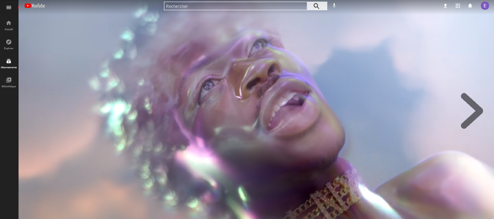 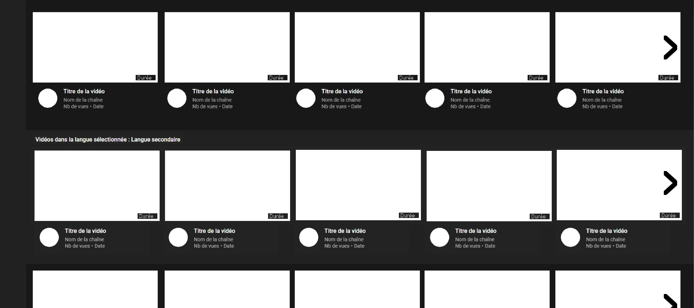
La consigne était de trouver de nouvelles fonctionnalités à Youtube. Pour ma part, deux fonctionnalités ont été réfléchies et ajoutées : La première est celle d'avoir une sélection de vidéo selon la région et la langue du monde que l'on choisit. Ainsi je peux choisir d'être en France et d'avoir du contenu russe ou canadien sans que tout mon contenu ne soit influencé. Ma seconde fonctionnalité a pour but de mettre en avant, constamment, des contenus en fonction de plusieurs paramètres (ce qui fait parler et les journées nationale). Par exemple, durant la journée internationnale de la femme, sur la page d'accueil, il y a une mise en avant de créatrices de contenus. Dans mon projet que vous trouverez ici (et complet, avec benchmark, études approfondies ici), j'ai mis en avant la vidéo du clip musical Montero de Lil Nas X, ce dernier ayant reçu beaucoup de haine de par son message pro-lgbt, il me paraissait être une bonne idée de le mettre en avant. Bien entendu cette fonctionnalité, n'est pas internationale, et elle peut être différentes en fonction des régions du monde.
DESIGN DU SITE DE LA FORMATION BTECH
Chaque promotion a pour défie de (re)créer le site de la formation.
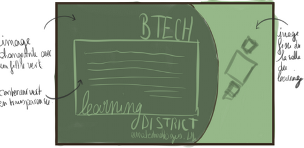 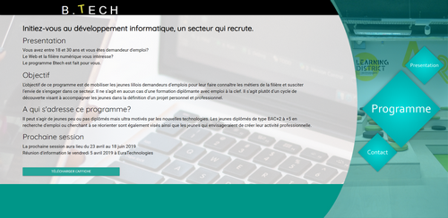
La 21ème promotion de BTech dont j'ai fait partie n'a pas échappé à la règle. Avec les compétences que l'on avait acquise, il nous a été demandé de créer un site présentant très clairement et simplement la formation BTech. Dans cette équipe de cinq étudiants, j'ai pris le rôle de web designer et infographiste. Je m'occupais principalement du design, des premiers wireframes, du choix des images, du placement de ses dernières, ainsi qu'un bout de front. L'idée était de nous mettre en situation réelle, nous n'avions que trois jours pour remettre le site, ainsi il a fallu travailler sous pression et bien gérer notre temps, notre charge de travail individuel et l'avancé du projet au complet.
CREATION DU SITE MyJO, Hackathon
MyJO est un projet externe, sous le thème des Jeux Olympiques de Paris
 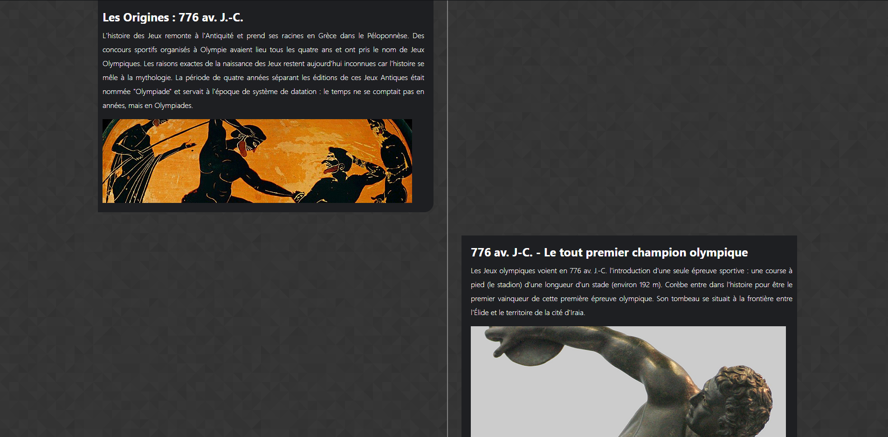 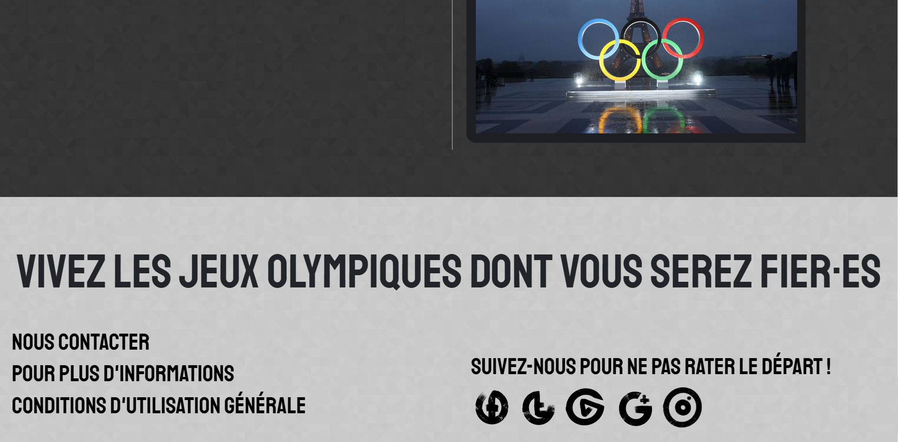
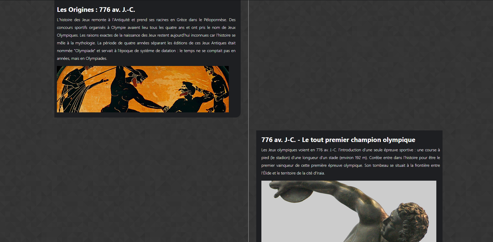 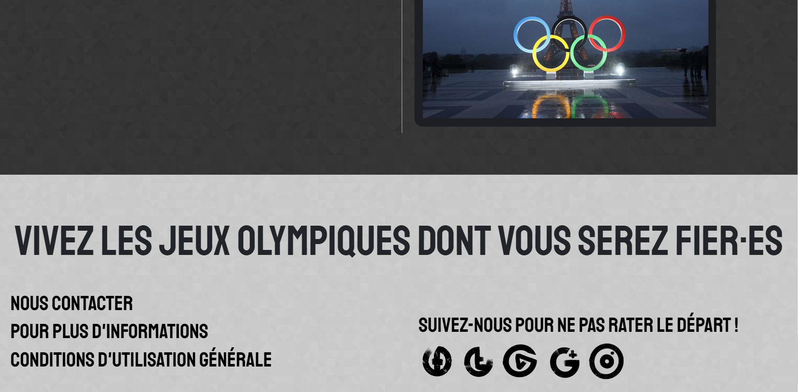Dans un délai de trois jours, j'ai rejoins une étudiante de communication pour monter et mettre au point une idée innovante autour du thème des prochains Jeux Olympiques français. Le thème choisi par notre duo est celui du pâtrimoine des JOs. Ainsi pour présenter nos idées, il m'a fallu faire un site vitrine sur lequel nous pouvions nous baser pour notre argumentaire. Notre idée de base était de créer des parcours, des activités et expériences autour des sports des JO ainsi que des sportifs présents, pour créer une cohésion sociale et culturel.
Audiovisuel : Montage Vidéo
Manipulation de vidéo dans le but de créer des teasers
Pars le biais de différents projets étudiants, j'ai pu prendre un peu plus de confiance sur mes capacités en montage. Première pro est devenu un outil de travail très agréable et j'ai trouvé une nouvelle passion dans le montage vidéo.
Création d'un portfolio
Dessiner est pour moi une habitude que ça soit avec des moyens traditionnels ou non
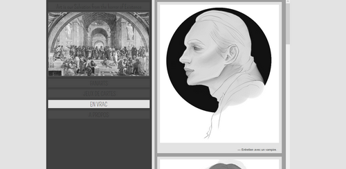 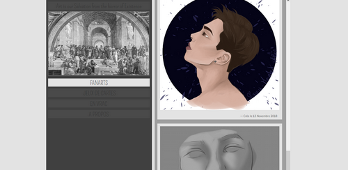
Afin de collecter mes dessins, j'avais décidé de me lancer le défi de créer un site web sui ferait office de portfolio. C'est mon premier site complet à ce jour et bien qu'il ne soit codé qu'en html5 et css3 de manière très simple, il fonctionne et n'a pas de problèmes majeurs empêchant la lecture du site.
Art digital & Peinture
Dessiner est pour moi une habitude que ça soit avec des moyens traditionnels ou non
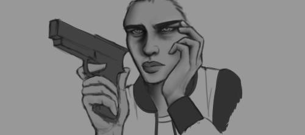 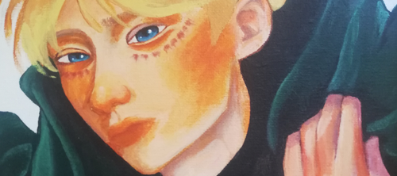